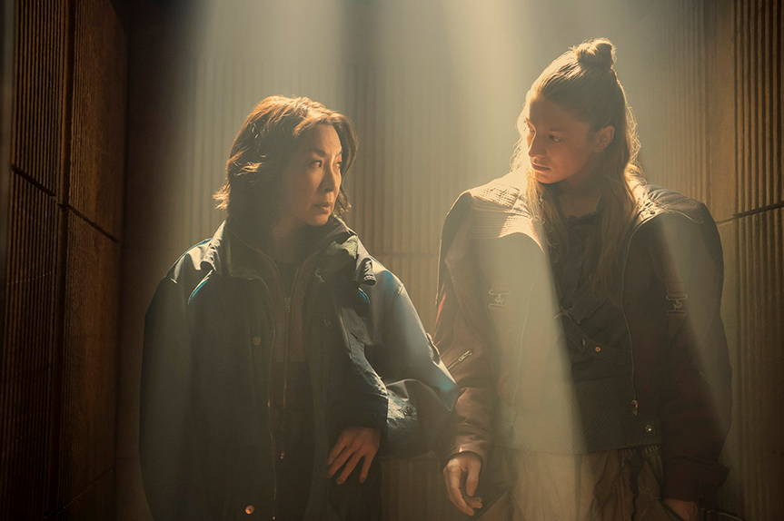

各位科幻迷们，准备好迎接一场视觉与思想的双重盛宴了吗？那个让我们魂牵梦萦的赛博朋克世界，终于要回来了！本片将于2026年11月25日在 Amazon Prime Video 独家上线。

就在刚刚，Prime Video 放出了《银翼杀手2099》的最终版预告片，信息量巨大，直接把整个系列的世界观彻底颠覆。看完预告片的无数科幻迷直呼：这才是银翼杀手该有的味道！
距离《银翼杀手 2049》的故事已经过去整整 50 年，霓虹笼罩、烟雾弥漫的洛杉矶得以重生，但重建这座城市的，并不是人类。
曾经被人类奴役、追捕的复制人，在战争之后翻身掌权，成为社会的主导物种。人类跌落到社会底层，沦为二等公民，在自己曾经主宰的世界里艰难求生。曾经被猎杀的对象，如今翻身做了主人，这个世界彻底颠倒了！
预告片抛出一句直击灵魂的拷问：你是一个好人，还是一个坏人？
在这个身份随时可以伪造、善恶界限彻底模糊的未来，是人，还是复制人，已经成为决定一个人命运的关键问题。
编剧兼主创西尔卡·露易莎在圣迭戈漫展上说过一句让人脊背发凉的话："教会我们何为人性的，或许未必是人类。"
本剧双主角阵容相当亮眼：奥斯卡得主杨紫琼、《亢奋》女星亨特·莎弗联手主演8集限定科幻剧，雷德利・斯科特担任执行制片人，原汁原味延续银翼杀手的暗黑赛博朋克气质。
亨特·莎弗（《亢奋》主演）饰演的 Cora 是一个走投无路的逃犯，她决定孤注一掷，披上"银翼杀手"的身份，做最后一搏。命运的安排，让她不得不和杨紫琼饰演的复制人 Olwen 组队办案。
而她的搭档？杨紫琼饰演的 Olwen，一个生命即将走到尽头的复制人。
两人搭档追捕一名逃亡者，而这名逃犯身上，藏着足以让整座脆弱城市彻底崩塌的惊天秘密。
一边是苟延残喘的人类，一边是时日无多的复制人，两个立场完全对立的个体，被迫携手游走在洛杉矶的灰色地带。
《银翼杀手2099》调转规则，把压迫者与被压迫者的身份互换，探讨权力、身份、生存的终极议题。依旧是熟悉的潮湿霓虹、悬浮飞车、阴雨连绵的洛杉矶，但一切规则，全都不一样了。